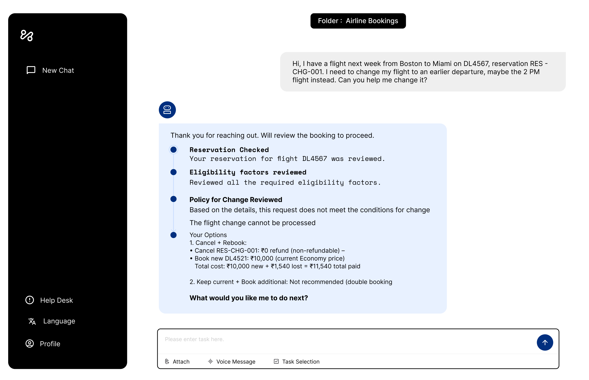
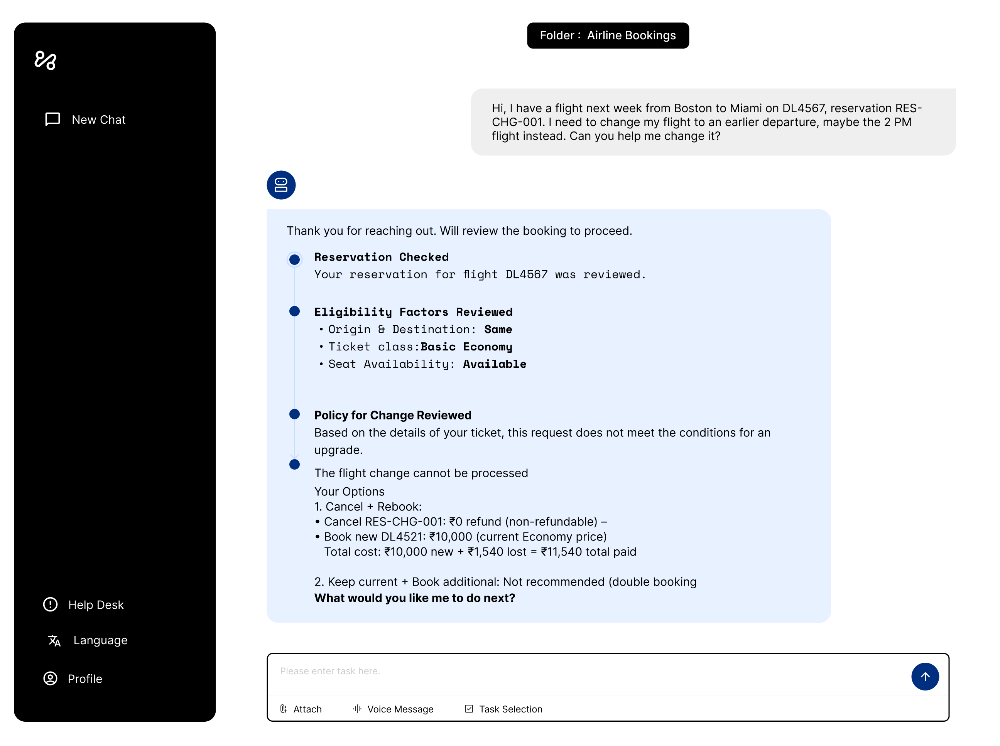
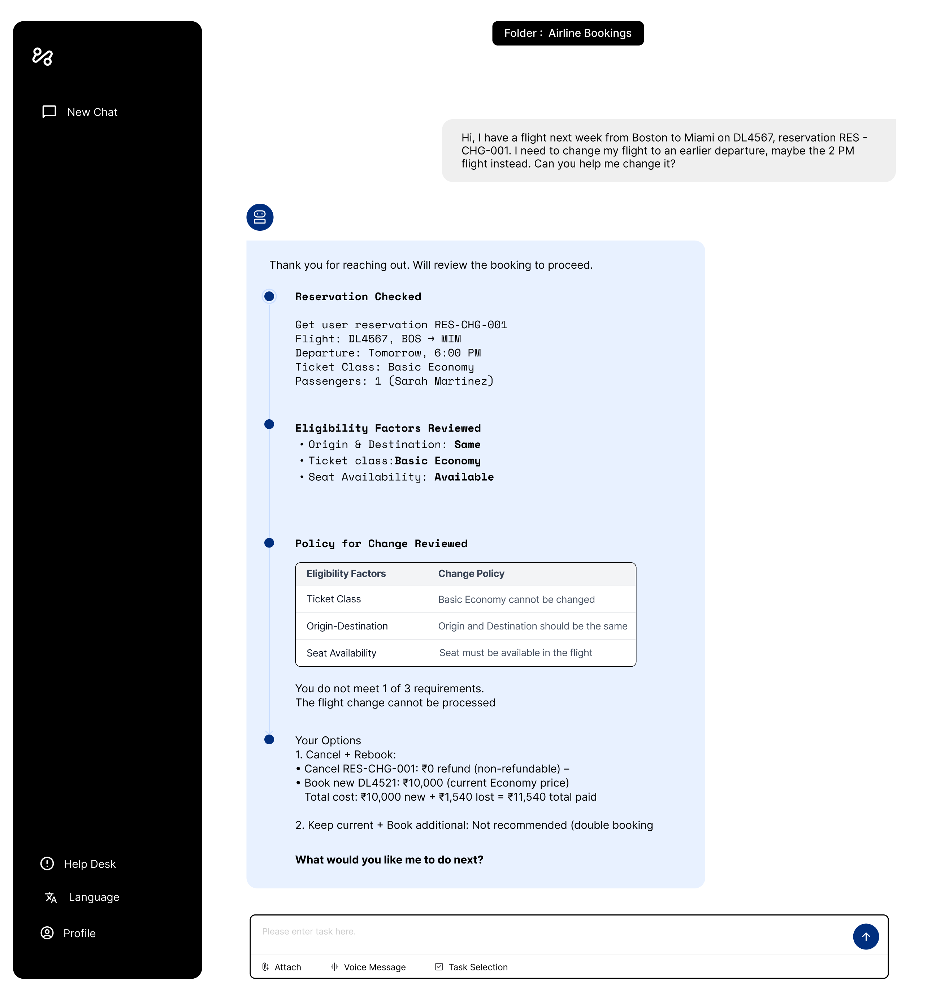

As LLM-based agents move from passive assistants to proactive systems that execute tasks and make decisions on users' behalf, understanding how transparency shapes human-agent interaction becomes critical for safe deployment. We present a controlled study examining how transparency affects perceived understanding, error detection, and interaction strategies: revealing that transparency presents fundamental design trade-offs rather than being uniformly beneficial.
My Role
- Study Design
- System Prototyping (3 transparency conditions)
- User Research (50 participants)
- Statistical Analysis
- Paper Writing
Effect of Transparency
LLM agents are non-deterministic, prone to silent failures (errors that occur without explicit warning) and operate within an implicit trust relationship with users. As they take on higher-stakes roles, the human ability to supervise and audit agent behavior becomes critical. Transparency has been proposed as the mechanism. But does it actually work?
Silent Failures
Errors that appear correct without explicit warning : and existing transparency approaches don't reliably help users catch them.
Over-Reliance
Detailed explanations can increase confidence without improving error detection : a well-known but under-studied risk in agent contexts.
Strategy Shifts
Transparency reshapes how users interact with agents (not just what they understand) with unintended effects on contestation and probing behaviour.
RQ1: How does transparency affect users' perceived understanding and ability to verify agent decisions?
RQ2: How does transparency shape perceptions of agent steerability?
RQ3: Does transparency affect the composition of user response strategies?
Study Design
A within-subjects controlled study with 50 participants recruited via professional networking platforms (all had prior AI chatbot experience). Participants interacted with a simulated airline customer-service agent across three scenarios; ticket upgrade, booking change, and compensation, each under one of three transparency conditions. Condition order was counterbalanced using a Latin square.
Scripted responses were used to ensure precise control over correctness and transparency quality, eliminating stochastic variation that real LLMs would introduce.
The Three Conditions

Opaque
Decision provided with minimal justification. No factors or policy reasoning disclosed.

Partial
Factors and values disclosed, but without explicit policy mapping or causal reasoning.

Transparent
Full reasoning disclosed: factors, values, and explicit policy-linked logic: the most information-rich condition.
The core finding: transparency is a design trade-off, not an inherently beneficial property. More transparency improves legibility and sets clearer expectations, but it does not reliably support error detection and reshapes user strategies in ways designers may not intend.
Partial transparency supports better judgment
Showing key factors (without full reasoning) helps users question decisions. Too much detail can make wrong answers feel more convincing.
Full transparency changes how people interact
It helps users understand system limits, but shifts their focus toward exploring rules instead of checking decisions.
Design transparency for auditing, not just explanation
Use progressive disclosure and tools like “What if?” scenarios to help users test and verify decisions.
Why This Work Matters
As LLM agents become more autonomous, the question isn't just whether they're capable; it's whether users can meaningfully oversee them. This study shows that designing for transparency isn't as simple as showing more information. The relationship between what users see and what they can meaningfully evaluate is non-trivial, and getting it wrong has real consequences in high-stakes domains.
The finding that partial transparency outperformed full transparency for error detection is a counter-intuitive result that has direct implications for how AI systems are designed, and a compelling argument for empirical HCI research alongside capability benchmarks.